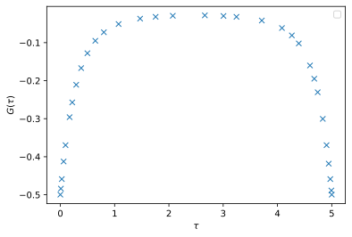

Step-by-step guide
Step 1 - Spawn solver instance
[2]:
from triqs_soehyb.triqs_solver import TriqsSolver as Solver
norb = 3
S = Solver(
beta=5.0,
gf_struct=[('up', norb), ('do', norb)],
eps=1e-8, w_max=50.0)
Warning: could not identify MPI environment!
___ ___ _ ___ _____
/ __| ___| __|__| || \ \ / / _ )
\__ \/ _ \ _|___| __ |\ V /| _ \
|___/\___/___| |_||_| |_| |___/ [github.com/TRIQS/soehyb]
beta = 5.0, lamb = 2.50E+02, eps = 1.00E-08, N_DLR = 32
fundamental_operators = [1*c('up',0), 1*c('up',1), 1*c('up',2), 1*c('do',0), 1*c('do',1), 1*c('do',2)]
H_mat.shape = (64, 64)
H_loc = 0
Starting serial run at: 2025-08-19 11:38:46.470781
The solver class takes the input
beta: inverse temperaturegf_struct: Green’s function structure 1st index: name, 2nd index: dimension of subspaceeps: Accuracy of Discrete Lehmann Representation (DLR) used for imaginary time response functionsw_max: DLR freqiency cut-off (the spectrum of the model must be in the range[-w_max, +w_max]
Step 2 - Impurity many-body Hamiltonian
Examples
[3]:
from triqs.operators import n
U = 2.0
mu = U / 2
h_int = U * n('up',0) * n('do', 0) - mu * ( n('up', 0) + n('do', 0) )
print(h_int)
-1*c_dag('do',0)*c('do',0) + -1*c_dag('up',0)*c('up',0) + 2*c_dag('do',0)*c_dag('up',0)*c('up',0)*c('do',0)
[4]:
spin_names = ['up', 'do']
U = 4.6
J = 0.8
from triqs.operators.util.U_matrix import U_matrix_kanamori
KanMat1, KanMat2 = U_matrix_kanamori(norb, U, J)
from triqs.operators.util.hamiltonians import h_int_kanamori
h_int = h_int_kanamori(spin_names, norb, KanMat1, KanMat2, J, off_diag=True)
print(h_int)
from itertools import product
N = sum([ n(spin, idx) for spin, idx in product(spin_names, range(norb)) ])
mu = 0.5*(5*U - 10*J)
h_int -= mu * N
2.2*c_dag('do',0)*c_dag('do',1)*c('do',1)*c('do',0) + 2.2*c_dag('do',0)*c_dag('do',2)*c('do',2)*c('do',0) + 0.8*c_dag('do',0)*c_dag('up',0)*c('up',2)*c('do',2) + 0.8*c_dag('do',0)*c_dag('up',0)*c('up',1)*c('do',1) + 4.6*c_dag('do',0)*c_dag('up',0)*c('up',0)*c('do',0) + 3*c_dag('do',0)*c_dag('up',1)*c('up',1)*c('do',0) + 0.8*c_dag('do',0)*c_dag('up',1)*c('up',0)*c('do',1) + 3*c_dag('do',0)*c_dag('up',2)*c('up',2)*c('do',0) + 0.8*c_dag('do',0)*c_dag('up',2)*c('up',0)*c('do',2) + 2.2*c_dag('do',1)*c_dag('do',2)*c('do',2)*c('do',1) + 0.8*c_dag('do',1)*c_dag('up',0)*c('up',1)*c('do',0) + 3*c_dag('do',1)*c_dag('up',0)*c('up',0)*c('do',1) + 0.8*c_dag('do',1)*c_dag('up',1)*c('up',2)*c('do',2) + 4.6*c_dag('do',1)*c_dag('up',1)*c('up',1)*c('do',1) + 0.8*c_dag('do',1)*c_dag('up',1)*c('up',0)*c('do',0) + 3*c_dag('do',1)*c_dag('up',2)*c('up',2)*c('do',1) + 0.8*c_dag('do',1)*c_dag('up',2)*c('up',1)*c('do',2) + 0.8*c_dag('do',2)*c_dag('up',0)*c('up',2)*c('do',0) + 3*c_dag('do',2)*c_dag('up',0)*c('up',0)*c('do',2) + 0.8*c_dag('do',2)*c_dag('up',1)*c('up',2)*c('do',1) + 3*c_dag('do',2)*c_dag('up',1)*c('up',1)*c('do',2) + 4.6*c_dag('do',2)*c_dag('up',2)*c('up',2)*c('do',2) + 0.8*c_dag('do',2)*c_dag('up',2)*c('up',1)*c('do',1) + 0.8*c_dag('do',2)*c_dag('up',2)*c('up',0)*c('do',0) + 2.2*c_dag('up',0)*c_dag('up',1)*c('up',1)*c('up',0) + 2.2*c_dag('up',0)*c_dag('up',2)*c('up',2)*c('up',0) + 2.2*c_dag('up',1)*c_dag('up',2)*c('up',2)*c('up',1)
Step 3 - Hybridization function
Examples
[5]:
from triqs.gf import make_gf_dlr_imtime, make_gf_dlr_imfreq
from triqs.gf import inverse, iOmega_n
for bidx, delta_tau in S.Delta_tau:
delta_w = make_gf_dlr_imfreq(delta_tau)
delta_w << inverse(iOmega_n - 1.0)
delta_tau[:] = make_gf_dlr_imtime(delta_w)
[6]:
from triqs.gf import make_gf_dlr_imtime, make_gf_dlr_imfreq, SemiCircular
for bidx, delta_tau in S.Delta_tau:
delta_w = make_gf_dlr_imfreq(delta_tau)
delta_w << SemiCircular(2.0)
delta_tau[:] = make_gf_dlr_imtime(delta_w)
Step 4 - Self-consistent solution
[7]:
S.solve(h_int=h_int, order=2)
AdaPol: Hybridization fit accuracy 1.31E-07, using 5 poles.
(Order, N_Diags) = [(1, 1), (2, 60)]
max_order = 2
iter | conv | Z-1
------+----------+-----------
1 | 1.95E-01 | +2.22E-16
2 | 3.68E-02 | +1.11E-15
3 | 2.64E-02 | +2.22E-16
4 | 3.25E-03 | -3.33E-16
5 | 1.83E-03 | -2.22E-16
6 | 6.63E-04 | +2.22E-16
7 | 6.22E-05 | +2.22E-16
8 | 6.54E-05 | -9.99E-16
9 | 1.34E-05 | +2.22E-16
10 | 3.23E-06 | +0.00E+00
Timing: incl. excl.
------------------------------------------------------------
Dyson equation: 17.747 17.747 8.5% |--|
Hybridization compression (AAA): 0.245 0.245 0.1% |
Pseudo-particle self-energy: 171.026 171.026 82.3% |--------------------------------|
Single particle Green's function: 15.046 15.046 7.2% |--|
Other: 3.631 3.631 1.7% ||
------------------------------------------------------------
Total: 207.696 100.0%
Step 5 - Single particle response function
[8]:
print(S.G_tau)
Green Function G composed of 2 blocks:
Greens Function G_up with mesh DLR imaginary time mesh of size 32 with beta = 5, statistics = Fermion, w_max = 50, eps = 1e-08 and target_shape (3, 3):
Greens Function G_do with mesh DLR imaginary time mesh of size 32 with beta = 5, statistics = Fermion, w_max = 50, eps = 1e-08 and target_shape (3, 3):
Step 6 - Store solver to disk
[9]:
from h5 import HDFArchive
filename = f'data_soehyb_result.h5'
with HDFArchive(filename, 'w') as A:
A['S'] = S
Step 7 - Read result from disk
[10]:
with HDFArchive(filename, 'r') as A:
S = A['S']
Step 7 - Postprocessing and visualization
[11]:
from triqs.plot.mpl_interface import plt, oplot, oplotr, oploti
oplotr(S.G_tau['up'][0, 0], label=None)
plt.ylabel(r'$G(\tau)$');
